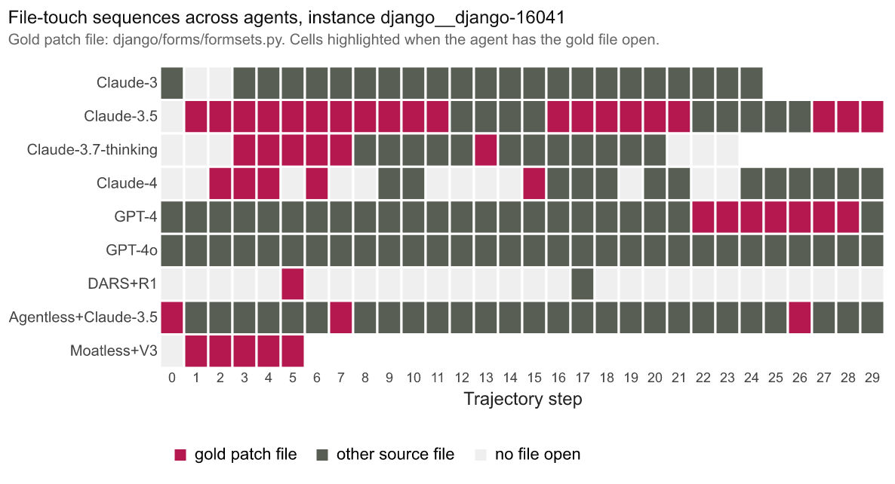

procgrep
What it does
Context, briefly. An LLM coding agent is a system that uses a language model to solve programming tasks: searching a repository, opening files, editing code, running tests, submitting a patch. Its trace is the recorded sequence of those tool calls. Different scaffolds wrap models differently: one might give the model a shell and a file-editor, another might run a fixed pipeline of localize then patch then test. A benchmark like SWE-bench Verified is a standard task set the community uses to compare systems.
The problem. Outcome metrics like SWE-bench pass or fail compress everything an agent does into one bit. Two agents can solve the same task in structurally different ways. Two agents that fail can fail differently. The procedural layer — the sequence of tool calls the agent makes on its way to an answer — holds this information, and outcome scores cannot see it.
What procgrep does. It takes the trace log of an LLM coding agent and produces a structural fingerprint of how the agent worked, not just whether it succeeded. Two readings of the same library: compare agents to see whether they work in structurally distinct ways, or search a corpus of trajectories for the ones that match a specification. The grep name reads both ways on purpose.
How. Three steps, plain language. First, translate each scaffold's tool-call vocabulary into a shared one, so different agents can be compared at all. Second, learn a compact representation of the recurring patterns in those sequences. Third, compare any two groups of agents by how those patterns distribute. The technical primitives behind each step — byte-pair encoding, Jensen-Shannon divergence, leave-one-group-out probes, UMAP projection, and regex-based pattern matching — are linked in the glossary below.
Provenance. The library was extracted from the analysis pipeline used in Procedural Grep: Structural Variation for Agent Rollouts, where it characterized the procedural fingerprints of nine LLM coding agents across five paradigm-by- scaffold cells on SWE-bench Verified.
The pipeline
Each operation is a pure function of typed data. The CLI mirrors the Python API; commands compose by reading and writing JSON or JSONL on disk.
- canonicalize canonical atom sequence from raw scaffold traces
- fit_bpe the atom corpus yields a BPE motif vocabulary
- encode each trace becomes a motif-frequency fingerprint
- jsd_matrix pairwise Jensen-Shannon divergence between group-mean fingerprints
- probe · umap · patterns · stats predictive transfer, projection, rule matching, descriptive statistics
Sample runs and results
Two kinds of evidence: the bundled synthetic corpus reproduces in seconds on any machine, and the paper's nine-agent corpus shows what procgrep produces at scale.
On the bundled synthetic corpus
The bundled quickstart script, run against
examples/synthetic_traces.jsonl (six trajectories, two
agents, two groups), prints:
$ python examples/python/01_quickstart.py
loaded 6 raw records from synthetic_traces.jsonl
canonicalized into 6 traces
syn-001 agent=editor atoms=['edit', 'pytest', 'edit', 'pytest', 'submit']
syn-002 agent=editor atoms=['open', 'edit', 'pytest', 'submit']
syn-003 agent=searcher atoms=['search_repo', 'read_file', 'search_repo', 'edit', 'run_test', 'submit']
syn-004 agent=editor atoms=['edit', 'edit', 'edit', 'edit', 'edit', 'edit', 'submit']
syn-005 agent=searcher atoms=['search_repo', 'search_repo', 'read_file', 'submit']
syn-006 agent=editor atoms=['edit', 'run_test', 'edit', 'run_test', 'edit', 'run_test', 'submit']
learned vocabulary: 5 atoms + 6 merges = 11 tokens
encoded 6 fingerprints; each of dimension 11
pairwise JSD by agent (upper triangle only):
editor vs searcher JSD = 0.7415
Two agents with disjoint procedural styles; JSD lands near the maximum (1.0 is the ceiling under log base 2). That is the metric behaving as expected.
On the paper's nine-agent corpus
Three figures from the analysis pipeline procgrep was extracted from. Same code path, ~2,639 trajectories instead of six.


The canonicalization-layer caveat
The procedural fingerprint reflects what the canonicalizer captures,
not the agent's full behavior. A direct audit of one Moatless trace
found 71 internal RunTests references inside the trace
content, zero of which surfaced as canonical atoms because the
Moatless adapter walks action_steps indexed by
action_args_class, and test executions live in a
different part of the planner tree.This is the worked example from the paper's §Threats. The corpus-level finding "Moatless has no test atoms" is therefore a canonicalization artifact, not a behavioral claim about Moatless. Read "tests run zero times in the trace" as a property of the
captured atom stream, not as a behavioral claim about what the agent
did outside that stream.

Where procgrep fits
DSPy is not the same kind of thing as procgrep, but the composition of the two enables a real workflow: optimize an agent's prompts with DSPy, audit whether the optimization changed the procedure with procgrep. The same logic extends to the outcome layer (SWE-bench, AgentBench): outcome metrics tell you what an agent achieved; procgrep tells you how.
The three layers:
| Layer | Instrument | What it controls or measures |
|---|---|---|
| Prompt / NL | DSPy | Compiles and optimizes the prompts an agent receives. |
| Procedural / tool-call | procgrep | Characterizes the tool-call trajectory the agent produces. |
| Outcome | SWE-bench, AgentBench | Scores pass/fail on benchmark tasks. |
The library does not depend on DSPy. What the composition unlocks, concretely:
- Audit a DSPy compile. Capture traces before and after a DSPy compile run. Compute JSD between the two arms. Either the prompt-layer optimization produced a measurable procedural-layer shift, or it did not — and procgrep gives you the number. The latter is itself a finding: procedure is determined more by scaffold and base model than by prompt.
- Use procgrep as a DSPy compile metric. If your goal is not just "pass more tests" but "pass more tests with a specific procedural shape" (more localizing, fewer edit loops, bounded shell-cd usage), procgrep can score each candidate program by procedural distance from a target. DSPy's compiler optimizes against that score.
- Compare agents that DSPy cannot distinguish. Two prompt programs that DSPy considers equivalent (same outcome metric value) may produce structurally different procedures. procgrep makes that difference visible and quantifiable.
The natural-language layer and the procedural layer are coupled but not the same. Working on one without instrumenting the other means flying blind on half the system. procgrep instruments the half that previously had no library.
Three modes of use
Same library, three audiences. Each mode is documented with a runnable
example script under examples/python/ in the repository.
1. Research instrument
Characterize where procedural structure lives across a corpus of agents. Build the JSD matrix; run the leave-one-group-out probe; surface the block structure. This is the paper's primary mode.
The procedure:
- Collect traces from every agent. One JSONL per agent or one combined file.
- Canonicalize each agent's traces using the appropriate adapter (built-in or custom).
- Fit one shared BPE vocabulary across the whole corpus, so the vocabulary itself is not a confound between agents.
- Encode every trajectory as a fingerprint under the shared vocabulary.
- Build the pairwise JSD matrix grouped by cell, agent, or any label of interest.
- Run the leave-one-group-out probe to test cross-group predictive transfer.
- Optionally project the fingerprint space with UMAP for a visual companion.
from procgrep import canonicalize, encode, fit_bpe, jsd_matrix, leave_one_group_out, umap_project
from procgrep.io import read_jsonl
raw = list(read_jsonl("corpus.jsonl")) # traces from all agents
traces = canonicalize(raw, adapter="swe-agent")
vocab = fit_bpe((t.atoms for t in traces),
vocab_size=200, seed=0) # shared across all agents
fps = encode(traces, vocab=vocab)
matrix = jsd_matrix(fps, group_by="group") # block structure visible
probe = leave_one_group_out(fps, label_field="group") # predictive transfer
umap = umap_project(fps, granularity="trace", seed=0) # visual companion
What you get. A JSD matrix that shows block structureThe JSD matrix shows rectangular regions of low divergence (within-cell) along the diagonal and high-divergence rectangles between cells. The layout encodes the dominant grouping axis. with tight within-cell divergence vs large cross-scaffold divergence; a probe result that quantifies "the held-out group is structurally novel; the classifier cannot predict it." On the paper's nine-agent corpus, within-cell JSD lands at 0.10 to 0.19 and cross-scaffold JSD at 0.62 to 1.00.
2. Controlled-eval harness
The question. You changed one thing about your agent — bumped the temperature, swapped a system prompt, switched the training recipe. Did the change actually move how the agent works, or did it just sample noise around the same procedural shape?
The idea. When a change does nothing, agents in the same arm look about as different from each other as agents across arms — that is just sampling noise. When the change does something, across-arm differences pull away from within-arm differences. The ratio of those two distances is your effect size.
How to run it.
- Hold everything fixed except one factor. Same base model, same scaffold, same benchmark task set. Vary only the one knob you care about: temperature, seed, RLHF variant, scaffold flag. Each value of that knob is one arm.
- Capture about 30 traces per arm. Below 30, the within-arm noise estimate gets noisy itself. The seed-sensitivity study in STUDIES.md establishes the floor empirically.
-
Label every trace with its arm. Put the arm
name in the
groupfield of each input record. procgrep groups by this label everywhere downstream. - Fit one shared BPE vocabulary across all arms. The most common mistake in this kind of analysis: fitting BPE per arm. That makes the vocabulary itself different across arms, and the JSD comparison loses meaning because you are comparing distributions over different supports. Fit once on the combined corpus.
- Compute two divergences. The within-arm JSD (the average pairwise distance between fingerprints in the same arm) is the noise floor: how much variation you would see even if your manipulation did nothing. The across-arm JSD (the distance between arm-mean fingerprints) is the signal: how much variation your manipulation actually produced.
- Compare them. If signal is at least about twice the noise floor, the factor moved procedure. If they are close, the factor sampled noise around the same shape.
- Run the leave-one-arm-out probe for a predictive version of the same claim. If a classifier trained on every arm but one can identify the held-out arm above chance, the arms are structurally distinct.
Code.
from itertools import combinations
from procgrep import canonicalize, encode, fit_bpe, jsd, jsd_matrix, leave_one_group_out
from procgrep.io import read_jsonl
traces = canonicalize(list(read_jsonl("temp_sweep.jsonl")), adapter="swe-agent")
vocab = fit_bpe((t.atoms for t in traces), vocab_size=200, seed=0)
fps = encode(traces, vocab=vocab)
# Signal: distance between arm-mean fingerprints.
signal = jsd_matrix(fps, group_by="group").to_array()
# Noise floor: mean pairwise distance within each arm.
arms = sorted({fp.group for fp in fps})
noise = {
arm: sum(jsd(a.distribution(), b.distribution())
for a, b in combinations([fp for fp in fps if fp.group == arm], 2))
for arm in arms
}
# Predictive version of the same comparison.
probe = leave_one_group_out(fps, label_field="group", seed=0)
What you walk away with. One number with a calibration: the signal-to-noise ratio. Above about 2, the factor you varied moved the agent's procedure. Around 1, it did not. The leave-one-arm-out probe is the predictive version: if the classifier beats chance, the arms have a procedural signature; if not, they do not. Two ways to read the same comparison, both with intuitive thresholds.
3. Procedural search and live monitoring
The library's name is literal: grep for procedures. Define a specification (a regex over canonical atoms or a YAML rule) and find every trajectory in a corpus that matches. The same primitive does double duty for live monitoring: run the matcher on the procedural prefix of a running trajectory, flag runs heading toward known failure shapes, interrupt before the budget burns.
Example queries this mode answers.
- "Find every trajectory with five or more consecutive edits":
(edit ){5,} - "Find trajectories that never opened the gold patch file": absence of a per-file open atom
- "Find trajectories where edits happened before any localize": missing-localize rule
- "Find trajectories that did not run a test before submitting": missing-test rule
- "Find trajectories matching a stuck-shell-cd-loop signature":
(SHELL_CD ){5,} - "Find trajectories that closely match this reference one": fingerprint nearest-neighbor (composed from
encode+jsd)
The setup:
- Author a YAML rule file with the invariants that should hold mid-trajectory. Some rules are eagerly checkable on partial prefixes (no-long-edit-loops); others (ends-in-submit) only make sense at completion.
- Load the rule set once at process start.
- Inside the agent loop, at each new atom, build a prefix
Traceand callmatch_patternson the single-trace list. - Inspect the returned violations; act on the eager ones; let the completion-only ones inform a final report.
from procgrep import Trace, load_patterns, match_patterns
patterns = load_patterns("rules/deployment.yaml")
EAGER = {"no_long_edit_loops", "missing_localize"}
def check_prefix(trace_id, agent, group, atoms_so_far):
prefix = Trace(trace_id=trace_id, agent=agent, group=group, atoms=atoms_so_far)
report = match_patterns([prefix], patterns)
return [v for v in report.violations.get(trace_id, []) if v in EAGER]
# In the agent loop:
for step in agent.run():
current_atoms.append(step.atom)
violations = check_prefix(run.id, run.agent, run.group, current_atoms)
if violations:
log.warning("procgrep flagged %s at step %d", violations, step.idx)
agent.interrupt()
break
Example rule file:
rules:
- name: no_long_edit_loops
description: No run of 5+ consecutive edits without an intervening test.
pattern: "(edit ){5,}"
must_hold: false
- name: missing_localize
description: A localize atom must precede the first edit.
pattern: "(search_repo|find_file|open|nav) .*edit"
must_hold: true
What you get. A regex-on-canonical-atoms matcher that runs in milliseconds. Cheap enough to invoke on every step of a live agent. Limitation: regex over atom sequences cannot express temporal- logic invariants ("eventually X follows every Y"); that is the future procedural-DSPy DSL.
Install
git clone https://github.com/hamidahoderinwale/procgrep.git
cd procgrep
pip install -e ".[dev]"
pre-commit install
Python 3.10 or newer. No LLM SDKs; the library is post-hoc analysis only.
Quickstart
The Python API. Same shape as the bundled quickstart example; runs on the synthetic corpus in a few seconds.
from procgrep import canonicalize, encode, fit_bpe, jsd_matrix, leave_one_group_out
from procgrep.io import read_jsonl
# 1. Read raw traces.
raw = list(read_jsonl("traces/raw.jsonl"))
# 2. Canonicalize: scaffold-specific actions to shared atom alphabet.
traces = canonicalize(raw, adapter="swe-agent")
# 3. Fit BPE: learn motif vocabulary across the corpus.
vocab = fit_bpe((t.atoms for t in traces), vocab_size=200, seed=0)
# 4. Encode trajectories as motif-frequency fingerprints.
fingerprints = encode(traces, vocab=vocab)
# 5. Compare.
matrix = jsd_matrix(fingerprints, group_by="agent")
probe = leave_one_group_out(fingerprints, label_field="group", seed=0)
Or the equivalent CLI chain:
procgrep canonicalize --input traces/raw.jsonl --adapter swe-agent --output canonical.jsonl
procgrep fit-bpe --input canonical.jsonl --vocab-size 200 --output vocab.json
procgrep encode --input canonical.jsonl --vocab vocab.json --output fp.jsonl
procgrep jsd --input fp.jsonl --group-by agent --output jsd.json
procgrep probe --input fp.jsonl --label-field group --output probe.json
Capabilities
Eight first-class operations. All deterministic, all reproducible without loading a language model.
| Function | What it does |
|---|---|
canonicalize | Built-in adapters for SWE-agent, Agentless, DARS, Moatless; custom adapters via the TraceAdapter protocol. |
fit_bpe | Greedy BPE merge over atom sequences; deterministic tie-breaking; persisted vocabulary. |
encode | Motif-frequency distributions under a fixed vocabulary; L1-normalized on demand. |
jsd · jsd_matrix | Jensen-Shannon divergence (log base 2; values in [0, 1]) at any group granularity. |
umap_project | UMAP at trace or group granularity, seeded for reproducibility. |
leave_one_group_out | Predictive-transfer probe with sklearn LeaveOneGroupOut and multinomial logistic regression. |
match_patterns | Level 1 YAML rule format; regex over canonical atoms with must_hold semantics. |
| stats helpers | Atom frequencies per group, effective vocabulary size, per-trajectory entropy, discriminative motifs. |
Integrations and case studies
procgrep is not a standalone library. It enhances existing agent infrastructure that already captures traces. Five concrete plug points, each with an illustrative snippet showing what the integration actually looks like in code.
1. Agent CI / regression testing
A team running their agent on a fixed task set inside CI wants to catch the case where a scaffold change or vendor model update silently shifts behavior. Two complementary checks: compare (JSD between the current build's fingerprint and a stored baseline, alert when the divergence exceeds the within-run noise floor) and search (run regression rules — known-bad patterns that should never appear — and fail the build if any match).
# .github/workflows/agent-ci.yml
- name: capture traces
run: python run_agent.py --tasks fixed_set.jsonl --output traces.jsonl
- name: procgrep drift check
run: |
procgrep canonicalize --input traces.jsonl --adapter swe-agent --output canonical.jsonl
procgrep encode --input canonical.jsonl --vocab baseline_vocab.json --output fp_current.jsonl
procgrep jsd --input fp_current.jsonl --group-by build --output drift.json
python check_drift.py drift.json --baseline 0.12 --tolerance 0.05 # exits 1 if exceeded
2. Prompt-optimization frameworks
DSPy's compilers
(BootstrapFewShot, MIPRO, COPRO) optimize against a
user-supplied metric. The default metric is outcome accuracy.
Wrap procgrep to also reward proximity to a target procedural shape,
and the compile loop optimizes for "pass more tests with this
procedure" instead of just "pass more tests."
from procgrep import jsd
from procgrep.bpe import apply_vocab
import dspy
def procedural_distance_metric(example, pred, trace=None):
# pred.trace is the agent's tool-call sequence; target_dist is your reference fingerprint.
if not resolves_correctly(example, pred):
return 0.0
pred_dist = fingerprint_of(pred.trace, vocab=reference_vocab)
return 1.0 - jsd(pred_dist, target_dist)
compiled = dspy.MIPRO(metric=procedural_distance_metric).compile(program, trainset)
3. Production observability and procedural search
Tools like LangSmith, Phoenix, Helicone, and Weights & Biases already capture LLM-call traces in production. procgrep adds two things on top: a procedural-fingerprint layer for dashboards ("stuck edit loop fired," "missing localize," "shell-cd storm" as per-run flags), and a search interface for forensics ("show me every trajectory from last week that matches this signature"). Nightly batch + on-demand query; both run off the same canonicalized trace store.
$ procgrep match-patterns \
--input yesterday_traces.jsonl \
--rules rules/production.yaml \
--output violations.json
$ jq -r '.violations | to_entries[] | "\(.key)\t\(.value | join(","))"' violations.json
trajectory_42a3b no_long_edit_loops,missing_localize
trajectory_91c1d no_long_edit_loops
trajectory_d7e8f shell_cd_storm
...
4. Benchmark leaderboards
SWE-bench, AgentBench, and ToolBench rank submissions by outcome. Two submissions with the same score can be doing structurally different things; outcome alone hides this. A procgrep-derived column adds the procedural axis. Maintainers compute it once per submission, post-acceptance.
# Add a column at the leaderboard level:
Submission Resolve% Procedural fingerprint
SWE-agent + GPT-4o 34.2 edit-heavy, low-search (effective vocab ~8)
Agentless + Claude-3.5 24.3 pipeline-template, deterministic (effective vocab ~1)
Moatless + DeepSeek-V3 19.8 edit-dominated, no-test (effective vocab ~5)
DARS + R1 16.7 planner-style, search-heavy (effective vocab ~12)
5. Search subagents and tool wrappers
WarpGrep is a code-search subagent for coding agents; retrieval plugins and MCP servers play similar roles. procgrep answers the question "does adding this wrapper change the agent's procedure beyond changing its outcome score?" by running the controlled-eval recipe with the wrapper on/off as the factor.
from procgrep import canonicalize, encode, fit_bpe, jsd_matrix, leave_one_group_out
# Arm A: agent without WarpGrep. Arm B: agent with WarpGrep enabled.
# N=30 traces each, same task set, same base model.
traces = canonicalize(read_jsonl("warp_ablation.jsonl"), adapter="swe-agent")
vocab = fit_bpe((t.atoms for t in traces), vocab_size=200, seed=0)
fps = encode(traces, vocab=vocab)
# `group` is "warp_off" or "warp_on" on each input record.
matrix = jsd_matrix(fps, group_by="group")
probe = leave_one_group_out(fps, label_field="group", seed=0)
# If JSD > 2x within-arm noise and probe accuracy > chance,
# WarpGrep changed the agent's procedure beyond changing its outcome.
Recipes (case studies the library has already produced)
Three findings from the originating paper's corpus, each presented as a recipe: the finding itself, then the rule or code that produced it. The recipes run on your own corpus unchanged; the findings below are what they produced on ours.
Recipe: find the stuck-edit-loop signature
Long Type B failure trajectories show EDIT_SRC_PY token proportion rising from 23% to 35%, with SUBMIT falling from 9% to 2%. Detectable from the post-localization prefix alone.
from procgrep import discriminative_motifs
# Long Type B and short Type B labeled in the `group` field.
top = discriminative_motifs(
long_and_short_fingerprints, vocab,
group_a="long_typeB", group_b="short_typeB",
k=10, ranking="log_odds",
)
for m in top:
print(m.motif, m.log_odds, m.p_a, m.p_b)
# EDIT_SRC_PY tops the list with positive log-odds (more in long failures).
Recipe: detect the Claude-4 SHELL_CD storm (or anything like it)
Within the SWE-agent extended-thinking cell, Claude-4 emits 33 SHELL_CD atoms per trajectory on average. 100% of Claude-4 trajectories use the atom; 65% contain a run of five or more consecutive SHELL_CDs. A model-class signature inside an otherwise paradigm-level cell, found with one YAML rule plus a per-agent atom-frequency table.
# rules/shell_cd_storm.yaml
rules:
- name: no_long_shell_cd_loop
description: "No run of 5+ consecutive SHELL_CD atoms."
pattern: "(SHELL_CD ){5,}"
must_hold: false
$ procgrep match-patterns \
--input canonical.jsonl --rules rules/shell_cd_storm.yaml --output report.json
$ jq '.pass_rate_per_rule.no_long_shell_cd_loop' report.json
0.591 # 41% of Claude-4 trajectories fail this rule
Recipe: audit a canonicalization-layer gap
Procgrep flagged 99.7% of Moatless trajectories as never running a
test atom. The raw-trace audit found 71 internal
RunTests references in one trace's content, none
surfaced by the canonicalizer's adapter. The library caught its own
canonicalization gap — exactly what procgrep is designed to surface.
# The pattern matcher rule that flagged the gap:
- name: tests_run_at_least_once
pattern: "(RUN_PYTHON_TEST_PY|RUN_PYTHON_REPRO_PY|RUN_PYTEST_*)"
must_hold: true
# Result on the Moatless cell: pass_rate = 0.003
# Implausibly low → adapter audit → 71 RunTests in raw trace → fix the adapter.
Where the integrations sit in the lifecycle
procgrep is post-hoc by design. It reads trace files and emits structural artifacts. Each integration above is a different place in the agent lifecycle to consume those artifacts. The library does not run agents, does not call models, and does not need streaming infrastructure to start being useful: pointing it at a directory of captured JSONL is enough.
Concepts in detail
Two methodological choices that load most of the work. Plain-language explanations, formulas, and runnable snippets for each.
BPE on atom sequences
Byte-pair encoding (BPE) was originally designed to break English text into subword pieces. The algorithm has nothing to do with text; it operates on any discrete sequence. procgrep applies it to sequences of action atoms instead. Each pass finds the most frequent adjacent pair, glues it into a single new token, and adds the merge to a learned vocabulary. The result is a compact alphabet that captures both single atoms and the most common multi-atom patterns in the corpus.
What that looks like on one trajectory:
# Raw atom sequence from one trajectory:
[SEARCH, EDIT_SRC_PY, RUN_PYTHON_TEST_PY, EDIT_SRC_PY, RUN_PYTHON_TEST_PY, EDIT_SRC_PY, SUBMIT]
# Pass 1: the most frequent adjacent pair across the corpus is
# (EDIT_SRC_PY, RUN_PYTHON_TEST_PY). Glue it.
[SEARCH, EDIT_SRC_PY+RUN_PYTHON_TEST_PY, EDIT_SRC_PY+RUN_PYTHON_TEST_PY, EDIT_SRC_PY, SUBMIT]
# Pass 2: the most frequent adjacent pair is now
# (EDIT_SRC_PY+RUN_PYTHON_TEST_PY, EDIT_SRC_PY+RUN_PYTHON_TEST_PY). Glue it.
[SEARCH, edit_test_loop, EDIT_SRC_PY, SUBMIT]
# After K passes, the vocabulary contains all base atoms plus
# K named multi-atom motifs. Each trajectory now has a much
# shorter, more structurally informative encoding.
In code:
from procgrep import fit_bpe, apply_vocab
atoms = [
["SEARCH", "EDIT_SRC_PY", "RUN_PYTHON_TEST_PY", "EDIT_SRC_PY",
"RUN_PYTHON_TEST_PY", "EDIT_SRC_PY", "SUBMIT"],
# ... many more trajectories ...
]
vocab = fit_bpe(atoms, vocab_size=200, seed=0)
tokens = apply_vocab(atoms[0], vocab)
print(len(tokens), tokens)
The headline trade-off: a larger vocabulary captures more nuanced
patterns but with diminishing returns. The paper sweeps
vocab_size and finds the JSD matrix stabilizes well
before V=200; the default in procgrep reflects that empirical knee.
Jensen-Shannon divergence
JSD measures how different two probability distributions are. The
idea, in plain language: take the average of the two distributions,
then measure how far each one is from the average; combine. The
quantity is symmetric (the order of inputs does not matter) and
bounded (with log base 2, JSD lies in [0, 1]), which
makes it well-behaved as a comparison metric.
The definition:
JSD(P, Q) = ½ · KL(P ‖ M) + ½ · KL(Q ‖ M), where M = (P + Q) / 2
Three reference points for intuition:
- JSD = 0 when P and Q are identical. The fingerprint of an agent compared to itself.
- JSD ≈ 0.15 in the paper's data: two agents in the same paradigm-by-scaffold cell (Claude-3 vs Claude-3.5 under SWE-agent).
- JSD ≈ 1.0 when P and Q put their mass on disjoint motifs. The paper's Agentless vs SWE-agent comparison reaches this ceiling.
In code:
from procgrep import jsd
# Two fingerprints, three-motif vocabulary:
p = [0.5, 0.3, 0.2] # editor: heavy on edit, run_test, submit
q = [0.1, 0.2, 0.7] # searcher: heavy on search and read
print(jsd(p, q)) # ≈ 0.42 — substantial difference, not maximal
print(jsd(p, p)) # 0.0 — identical
print(jsd([1, 0], [0, 1])) # 1.0 — disjoint with log base 2
Why JSD specifically: it is the standard interpretable, bounded, symmetric divergence for comparing two probability distributions. The procgrep paper uses log base 2 throughout so reported JSD values are directly comparable across corpora and across vocabulary sizes.
Why count-based fingerprints, not embeddings
Three reasons. Interpretability: each fingerprint dimension is a named motif, so JSD differences attribute to specific motifs that a reader can name and inspect. No model dependency: the fingerprint is deterministic and reproducible without loading a language model. Fidelity to the paper's framing: the paper argues procedure has discrete structure, and embedding atoms with a continuous language model would smear that structure into a similarity space. Embedding-based comparison is a legitimate alternative methodology and a candidate v0.2 capability, but it is not the choice the paper commits to.
Suggested studies
Five things you can answer with the library as it stands today. Each uses the existing public API; no new code required. Longer write-ups in STUDIES.md.
- Does temperature change how the agent works? Run the same agent at temperatures 0, 0.2, 0.4, 0.6, 0.8, 1.0 with 30 traces per setting. Plot how across-arm JSD scales with temperature. If there is a sharp knee in the curve, that is the production-temperature ceiling beyond which procedure starts fanning out.
- Can you predict failure from the first few steps? Train a classifier on the first K atoms of each trajectory and ask if it predicts the eventual outcome (resolved vs failed). If accuracy rises sharply with K, you can interrupt failing runs before they finish — the deployment-signal use case made quantitative.
- Did a DSPy compile actually change procedure, or just outcomes? Capture traces before and after a DSPy compile run. Compute JSD between the two arms. Either the NL-layer optimization produced a measurable procedural shift, or it did not. Either answer is a finding.
- How does extra reasoning time change the agent's procedure? Take one extended-thinking model. Vary the maximum thinking tokens it can spend. Capture 30 traces per setting. Watch how the procedural shape responds. Identifies the budget level where extra reasoning starts producing structurally different trajectories.
- Do rule-based and motif-based methods agree on the same finding? Take a finding from an existing BPE-motif analysis on your corpus. Write a regex rule that should catch the same signature. Run the rule via the pattern matcher. Two independent methods catching the same signature is the cross-method validation.
- Does the agent do different things for different task types, and what do they cost? In production, users send agents distinct task classes: bug fixes, refactors, code explanations, test additions, dependency bumps. Cluster the task prompts in semantic space (any sentence- embedding model plus k-means), label each trajectory with its cluster, then group fingerprints by cluster instead of by agent. Two outputs: a per-cluster procedural fingerprint (does the agent's procedure shift with task type?) and a per-cluster resource estimate (mean tokens, mean step count, mean cost). Joined, they tell you which task classes the agent handles efficiently and which trigger expensive procedural detours. Procgrep handles the grouping and per-cluster JSD natively; the prompt-clustering step and the token-resource join sit just outside the current library and land naturally in v0.2.
Documentation
| README.md | Capabilities, modes of use, examples per mode. |
| STUDIES.md | Ranked case studies the library enables. |
| FAQ.md | DSPy positioning, count-vs-embedding rationale, canonicalization-layer caveat. |
| ROADMAP.md | What is and is not on the path. |
| CONTRIBUTING.md | Dev environment, code style, PR conventions. |
Citing
The repository ships CITATION.cff;
GitHub renders a "Cite this repository" button from it. The paper
this library was extracted from is the primary citation target;
both citations should appear on the first paper release.